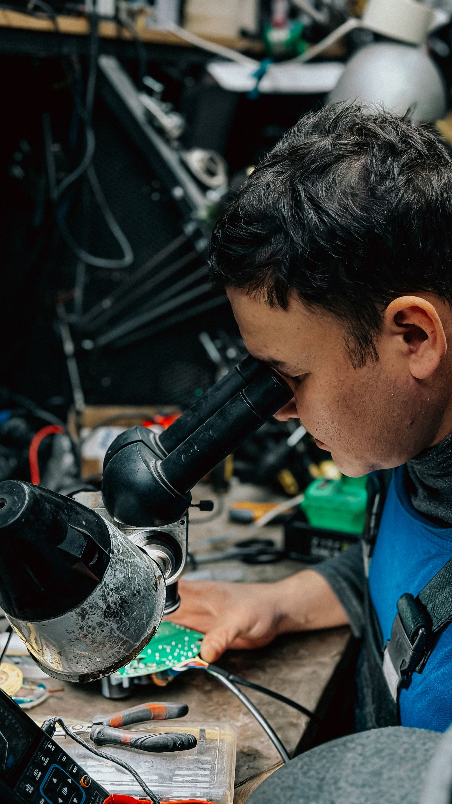

The fridge is part of the computer.
That sentence is the whole practice. A superconducting processor is not a chip with a refrigerator attached; it is one thermal, electrical and mechanical system that happens to have qubits at the bottom of it.
Dr Aino Korhonen
I trained as a low-temperature physicist — a doctorate on thermal transport in superconducting circuits — and spent six years in a national laboratory's quantum programme, where my job was the unglamorous end of the field: wiring, anchoring, filtering, and the cooldown logs that decide whether anyone else's beautiful device physics survives contact with a real fridge.
Since 2019 I have worked independently for the teams who build processors. The work splits three ways: bring-up of new transmon devices, characterisation that a client can defend in front of their own reviewers, and cryogenic design — looms, heat loads, stage budgets — for laboratories being built or rebuilt.
I have never seen a coherence problem improved by a press release. I have seen many improved by a torque wrench, a thermometer in the right place, and the patience to measure the same chip twice. The best T₁ I ever measured belonged to a device that failed everything else; both numbers went in the report. That is the standard this practice works to, and it is why every figure on this site arrives with its spread and its date attached.
Based in Helsinki. On site across Europe wherever the fridge is; fridge time for characterisation is available on the practice's own system when a client's is down, oversubscribed, or part of the problem.

How an engagement runs
Four stages, in order, none skippable. A cooldown is four to six days of calendar; the method exists so that none of them is wasted on a question that could have been asked warm.
Intake — warm, on paper
Device history, fridge records, prior cooldown logs and the question the engagement must answer, stated in one sentence. If the question cannot be stated, the engagement is a design review first, not a cooldown. Scope and fee are fixed in writing here — the estimator on the log page is a signal, never the scope.
Cooldown — the log opens
Every stage temperature recorded against time, every cable and anchor verified against the wiring schedule as the fridge goes down. Deviations are written in the log the day they happen, not reconstructed afterwards. This is the stage where Case file 01 was won.
Characterisation — distributions, to a standard
T₁, T₂ and benchmarking measured across the whole device, not the best qubit; repeated across cooldowns where the question demands it. The standard is simple: a number enters the report only with its spread, its n and its date — the same discipline Table D on the log page follows.
Report — the deliverable
A written report that says what was measured, what it means, and — where the answer is no — says no in the headline, with the redesign or the next measurement specified. Clients own the report outright, including the parts they would rather not have commissioned.
Four things this practice will not do to a number
- No best-ever numbers. The best T₁ a device ever showed is an anecdote about one qubit on one day. Reports carry medians and spreads across the device, with dates — because a processor is all of its qubits, every day it runs.
- No qubit counts as capability. A 1,000-qubit device with 1% gate errors is a heater with good public relations. Where a count appears in this practice's work, the error rates travel with it.
- Error correction's overhead, stated where lay readers meet it. At physical error rates near 0.1%, published estimates put one useful, error-corrected logical qubit at roughly a thousand physical qubits — the assumptions travel with that number too, and it is an estimate, not a schedule.
- No blame without a measurement. Chips get blamed for fridge faults and fridges for chip faults, sometimes for months (Case file 01). The practice measures first and assigns causes afterwards.
The short version
Fees are the rates printed on the log page, fixed in a written scope before work starts. Design reviews are fixed-fee. Characterisation and bring-up are day-rate, with cooldown cycles counted and agreed in advance.
No success fees, in either direction. A report that says a device falls short costs the same as one that says it passes; the practice's income never depends on the answer it gives.
Confidentiality is total and mutual: client devices, data and names stay under NDA, which is why every case file on this site is anonymised to role and programme. Measurement data belongs to the client.
Booking
The practice takes one bring-up at a time — a cooldown cannot be parallelised by wishing. Characterisation and design reviews run alongside.
Currently booking bring-up for Q3 2026; fault-finding call-outs are waitlisted and triaged by whether a programme is blocked on them. The contact page is the only intake — there is no other queue to join.
Start at the coldest stage.
Enquiries land at the mixing chamber — the contact page — and are answered by Dr Korhonen directly.